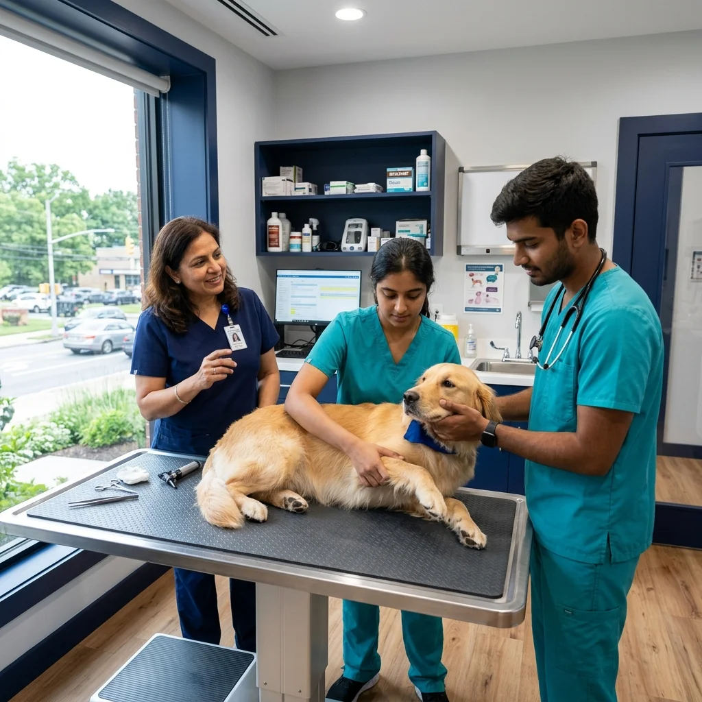
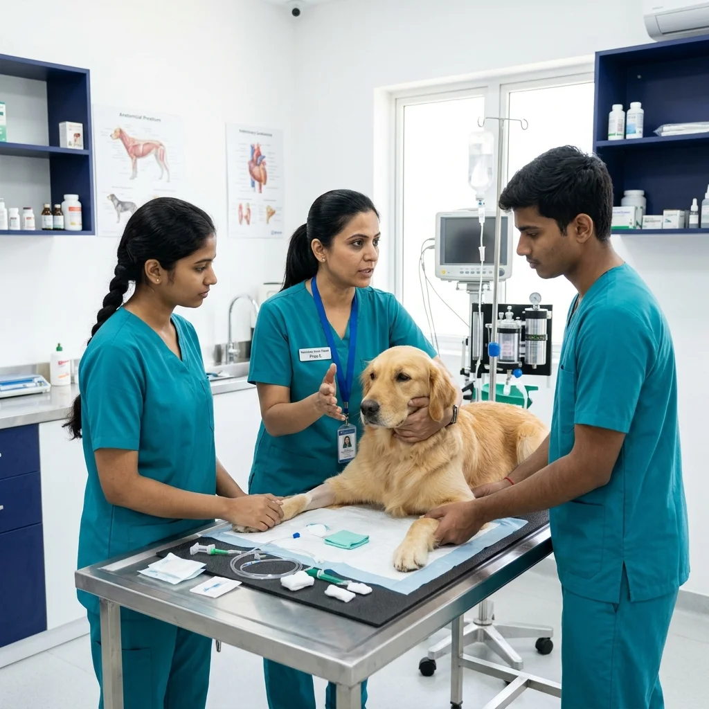
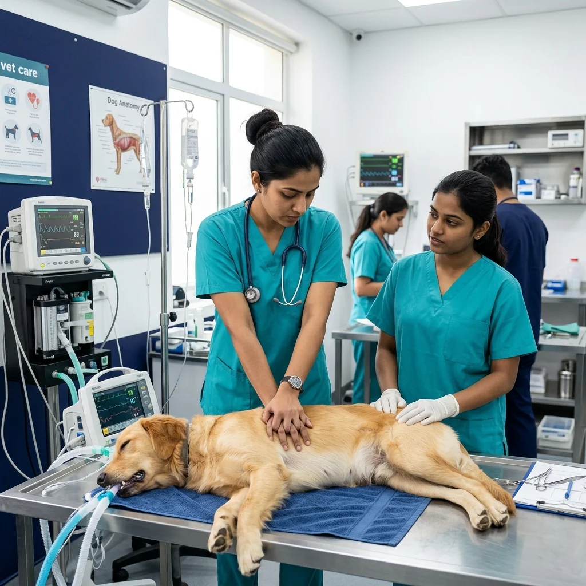
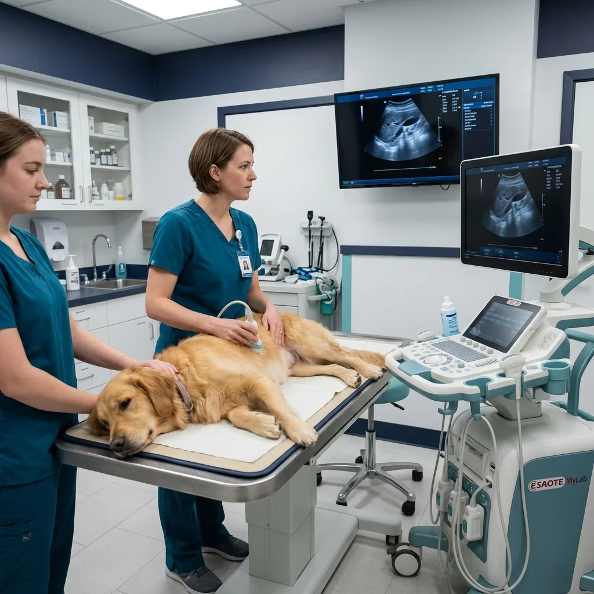

Surgery & Radiology Workshops
Advanced diagnostic imaging and soft tissue surgery tracks for senior practitioners looking to expand services.
Register InterestBridging the gap between university textbooks and high-stakes clinical practice. Master soft tissue surgery, digital radiology, emergency ICU triage, and ultrasound through immersive 1-on-1 practical mentorship.

1-on-1 Surgical Ergonomics & Tactile Mastery



Select your learner profile below to discover targeted curriculums built specifically for your experience level, professional goals, and clinical concerns.
Upgrade clinical confidence in surgeries, radiology, ECG, emergency, and critical cases.
Explore Skill-Up
Specialization tracks in soft tissue surgery, orthopedics, advanced radiology, and behavior.
View Advanced Workshops
Bridge academic theories with hands-on practice, internships, and career readiness roadmaps.
Start Career Prep
Learn clinical workflows, diagnostics, patient communication, and gain practical exposure.
Join Foundation
Learn emergency first aid, choking management, basic animal handling, and clinic duties.
Join WorkshopsComprehensive 4-week clinical mastery module covering soft tissue surgery, digital radiology, ultrasound & emergency triage.
OR setup, sutures, spay/neuter & closures
Radiographs & FAST abdominal ultrasound
Career-ready learning
Emergency response
Clinical assistance
Live practical sessions
Direct 1-on-1 mentorship from senior practicing MVSc surgeons & radiologists.
Premium, industry-aligned training programs built around clinical reality. Developed to move you from theoretical knowledge to independent confidence.
A flagship practical course focusing on everyday clinic essentials: surgery assistance, radiology, basic ECG, dermatology, wound management, and emergency response. Transition into self-sufficient practice.

Advanced diagnostic imaging and soft tissue surgery tracks for senior practitioners looking to expand services.
Register Interest
Designed for final-year students and fresh graduates. Learn real-world clinical workflow, client handling, and practical tools.
Apply Now
Select your primary learning concern and we'll highlight the targeted curriculum module built to address it.
Designed to help junior doctors and fresh graduates build manual dexterity and decision-making confidence during surgeries. Learn standard incisions, stitching methods, tissue handling, and operation room protocols.

Explore hands-on certification programs designed for veterinary students, fresh graduates, clinicians, and animal care professionals.
Surgery
Master standard incisions, stitching techniques, spay/neuter protocols, and abdominal organ surgeries under direct specialist mentorship.
 Radiology
Radiology
Gain hands-on probe handling skills and systematic digital X-ray interpretation techniques for emergency and routine abdominal scanning.
Emergency
Learn rapid patient triage, CPR resuscitation protocols, fluid therapy management, and ICU monitoring for small animal trauma cases.
Surgery
Comprehensive training in bone fracture stabilization, dynamic bone plating, IM pinning, and joint injury management in dogs and cats.
Medicine
Learn cardiac auscultation, ECG rhythm interpretation, echocardiography basics, and congestive heart failure management protocols.
Diagnostics
Master blood smear evaluations, organ panel interpretation (CBC, LFT, KFT), cytology staining, and urinalysis diagnostic workflows.
Designed for clinic assistants and nursing staff to master patient restraint, surgical scrub prep, anesthesia monitoring, and wound care.
Essential hands-on training for pet owners, rescuers, and shelter volunteers on wound dressing, toxin response, and pet CPR.
Our academic counsellors will recommend the best learning path based on your background and clinical goals.
Learn directly from senior clinical specialists, surgeons, and diagnosticians dedicated to building real-world veterinary confidence.
Live Surgery Training
15+ Years Experience
Clinical Mentor
Pioneered soft tissue surgical workflows; mentored over 1,200+ veterinary clinicians across India.
Specialist in digital X-ray diagnostic interpretation and ultrasound probe handling for small animals.
Expert in small animal emergency triage, CPR protocols, ICU stabilization, and critical care management.
Specializes in clinical workflow optimization, humane animal restraint, catheter prep, and assistant training.
Unsure which program fits your background and goals? Answer 2 simple questions to find your matched program, communication angle, and recommended next steps.
Tailored clinical programs and practical training paths engineered specifically for every stage of your veterinary career.
BVSc students and interns building foundational practical skills before clinic entry.
Clinicians upgrading manual surgical dexterity, radiology diagnostic confidence, and emergency care.
Senior doctors acquiring advanced soft tissue surgery, orthopedics, and ultrasound scanning capabilities.
Paravet staff and assistants mastering animal handling, surgical prep, and emergency response.
Educators and practicing specialists leading structured hands-on clinical workshops and mentoring.
We bridge the gap between academic theory and practical clinical excellence. Our programs combine hands-on surgical practice, expert mentorship, and state-of-the-art facilities to build your clinical confidence.
Explore our expert-led veterinary skill programs or connect with our academic counsellors to find the ideal learning track tailored for your goals.
Get complete clarity on clinical practice, eligibility, certifications, and career support so you can enrol with 100% confidence.
Yes, 100%. You work directly on active clinical cases under 1:1 specialist supervision. You will perform soft tissue surgeries, abdominal ultrasounds, orthopedics, and emergency triage protocols hands-on.
Absolutely. Our modules are structured step-by-step from core fundamentals to advanced surgical techniques, making them ideal for BVSc graduates, interns, and early-career veterinarians.
Yes. Upon successful completion of practical assessments and clinical logs, you receive an accredited VetNova Certificate of Practical Clinical Competency recognized by leading clinics.
Over 80% of program hours are devoted to direct clinical practice in surgical suites, diagnostic labs, and wet labs rather than theoretical lectures.
We offer tailored pathways: Clinical Skill-Up (for practitioners), Graduate Internship Bridge (for fresh grads), and Specialized Surgical Intensives. Our counsellors help select your ideal fit.

Located in Gawadewadi – Wagholi, Pune, our training centre is designed to simulate a real multi-specialty clinical workflow. Featuring a practical training zone, modern AV lecture facilities, and standard clinical diagnostics equipment.



Simulated multi-specialty clinical environment built to scale real-world practice.
Spacious lecture auditorium designed for interactive seminars and masterclasses.
High-definition audio-visual systems for crystal-clear procedure broadcasts.
Dedicated wet-lab workstations for hands-on surgical and diagnostic training.
On-site student check-in, orientation desk, and administrative support.
Convenient campus parking, refreshments lounge, and trainee amenities.

Syllabus designed specifically for doctors, students, nurses, and pet owners.
Practical demonstrations and case discussions with leading veterinary professionals.
Clear roadmap pathways for job placement, higher studies, and clinic setup.
Ethical handling and emergency care training integrated into all modules.
Hear how veterinarians, students, and nurses built practical confidence and transformed their clinical careers with VetNova training.
"The Skill-Up program completely transformed my surgical confidence. I went from assisting to performing soft tissue procedures independently within weeks."
Trusted by leading veterinary hospitals, pharmaceutical companies, equipment manufacturers and academic institutions.
Empowering practical veterinary clinical training through specialized sector collaborations.
Connecting veterinary practitioners with real-world clinical rotations, surgical procedures, and referral hospital networks.
Equipping hands-on wet labs with state-of-the-art surgical instruments, digital X-rays, ultrasound probes, and ICU monitors.
Collaborating with pathology reference labs and diagnostic experts to provide advanced interpretation and case-based training.
Partnering with veterinary universities, colleges, and research bodies to complement theoretical curricula with practical skill validation.
Join VetNova in advancing veterinary education through clinical innovation, equipment sponsorship, and practical learning initiatives.
Confused which module fits your career goals? Fill out this enquiry form, and our academic coordinators will assist you in mapping your path.
Gawadewadi – Wagholi, Pune, Maharashtra 412207
+91 99999 99999 (9 AM - 6 PM)
hello@vetnova.in
Our programs are structured into separate pathways: Clinical skill-up tracks are open to BVSc doctors, interns, and fresh graduates. Pet first-aid is designed for non-technical pet parents, feeders, rescuers, and NGO volunteers. The Vet Nurse track is suitable for assistants and paravet staff seeking basic certification.
We offer blended formats: Theoretical foundations, core lectures, and preparatory cases can be accessed online. Core surgical procedures, clinical radiology handling, and pet emergency scenarios are conducted in-person at our Wagholi, Pune training centre for hands-on validation.
Yes, all programs include a Certificate of Participation upon completing the modules and practical skill assessments. This serves as proof of clinical exposure and procedural training for graduates and assistants.
Absolutely. The Pet First Aid workshop is designed specifically for non-technical pet lovers. It uses simple, non-medical language and covers choking response, bleeding control, poisoning action, heat stroke, and animal handling in emergency situations.
You can express interest by filling out the enquiry form below, or by contacting our academic coordinators directly via the WhatsApp Enquiry button. We will send you batch calendars, module lists, and registration details.